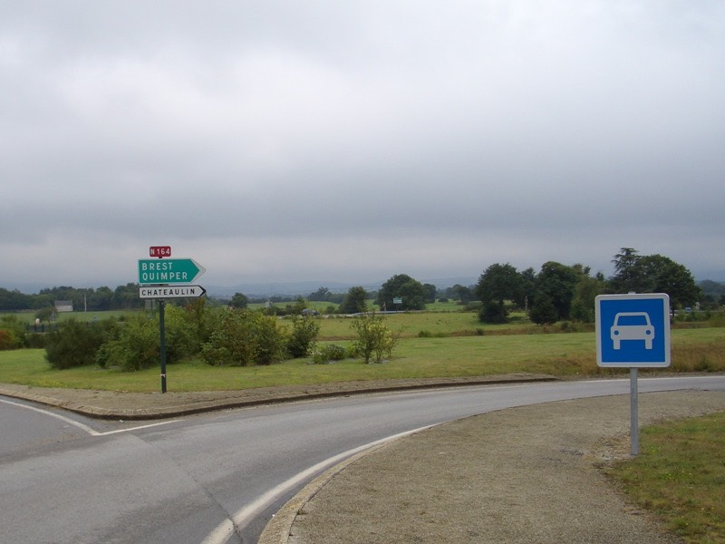

吃了感冒藥的緣故吧，昏昏沈沈就睡著了。半夢半醒之間，突然好想回巴黎。
那邊比較溫暖，但覺得這樣就打退堂鼓，太不爭氣了，等理由充分一點再回去。
一覺就睡到了早上九點，起床後神清氣爽，精神十足，單細胞生物復原的比較快。
伸懶腰看到窗外的天氣，就稍微感到一點沮喪，陰陰茫茫的毛毛雨飄個不停∼
這種下雨的天氣，早餐就在店裡頭解決吧。
繼續喝甜甜的熱巧克力，吃著法國麵包＆牛角麵包，配奶油跟果醬，柳橙汁。
雖然旅館提供的早餐大多千篇一律，而且價錢稍貴，但麵包是無限量供應的，
有本事吃多少你就儘管吃吧，很努力的吃了兩籃麵包，花了5歐元，就連中餐一併吃掉吧。
外頭的天氣一點變化也沒有，不如早一點出發吧∼希望往南走天氣能好轉。
在街頭上傳遊記完畢後，正式開始騎車，浪費了一小時，騎了20公里才證實，
全部都是汽車專用道，又被困住了 /_\ 哎...我命苦也
煙霧飄渺的港口
N165不給走，那就開始繞遠路吧，先走D712，一路轉D764->D11->D785->D770。
雖然坎坷，但起碼還有小路可以讓我騎，加加減減目前累積騎了兩千公里了。
在市區的時候，看到銀行就會停下車去問一下能不能換旅支。
相當神奇的，居然沒有一家銀行肯給換的，連之前試成功的CL銀行都不能換了。
身上現金大概剩下150元左右，清苦一點還可以過四天。
嘩啦啦拉∼∼下雨之後，好大的水呀
一路上的天氣都挺差的，雨勢雖然不大，但始終沒停過。
下到後來，甚至開始起霧了，在霧中騎車，真的如陷入五里霧一樣，前方什麼情況都看不見。
能見度大概只有30公尺，往四周一看，全都是白茫茫，只剩下自己被包圍在其中。
對一個生病剛痊癒的人而言，馬上就要在雨中騎上好幾個小時的車，是有些不人道的。
下午四點，突然的，沒有預警的，雨瞬間停了，太陽也馬上露臉。
霧漸漸的散開，雨過天晴真的就是這麼一回事，氣象變化的真快呀∼
淋了五小時的雨，買點東西吃吧∼
這個笑臉餅乾就是在車站等車時，投販賣機買的，希望吃了能變開心。
店裡面琳琅滿目的商品，一時之間還真不知道要買什麼好。
最後選了一條超大條，像土司一樣的蛋糕，3.2歐元。
相當努力的吃了一路上，也只啃掉半條，味道相當不錯，超值的選擇∼
吃著吃著就到了一個城市，裡頭有幾個很中世紀的建築物，剛好有導遊在講解。
繞了大半圈，早上N165不給走，下午連N164也不給走，真想一腳把藍色的牌子給踹倒。
繼續繞路前進吧∼∼∼

好多好多的蘋果呀∼有些已經開始成熟變紅，可以我太矮，果子太高，想偷摘也摘不到。
就這麼一路騎D系列的小路，晚上六點剛過，就到達坎佩爾了。
『嗯？真的到了嗎？』
自己都蠻懷疑的，怎麼會這麼快就到了，有點不可思議。
從街道巷弄間能看到城堡
路上除了有公車在跑之外，居然還有小火車呀∼！
目前所在的法國西北角，通稱布列塔尼地區，擁有異於法國地區的專屬文化和語言文字。
順利到達坎佩爾的旅遊諮詢中心，心裡想著今天還真是平淡，除了淋了一天的雨之外，
什麼事情都沒發生說，就這樣結束的話，要說平安也好，要說無聊也是，稀哩呼嚕又過了一天了∼
在中心裡拿到旅館一覽表，同時也從服務人員那得到一個壞消息，旅館幾乎都已經客滿了。
只能建議我去那些用籃筆圈起來的地方問問看，說不定還有機會。
籃筆圈起來的，一間比一間還貴，一晚86歐元，去搶不是比較快？
不死心還是照著地圖去問了幾間便宜旅館，果然通通客滿。
諮詢中心說的話還是可信的多，這下可好了，到了目的地但是找不到旅館。
只剩下幾間就算有房間我也住不起的三顆星跟連鎖旅館。
有一種叫做ibis的連鎖旅館，它沒有星等的評價，但貴的要命，一晚上居然要67歐元。
看到一對騎單車的男女，去住ibis，心裡想說67兩個人分攤也才33歐元，真好∼
自己一個人就沒這種命了，天天都奢侈的睡雙人房，付兩倍的房價。
每天的開銷，旅館永遠是佔最大宗，能找個夥伴一起旅行的話，住宿費能省一半呢。
但要找夥伴實在不容易，像我這樣一直迷路亂繞、丟三落四、亂無章理的，半路一定會拆夥。
雖然有點不太正常，但我準備離開坎佩爾，繼續往下騎。
如果這時候有個夥伴在的話，就會開始吵架。
『你瘋了嗎！？已經騎到目的地了呀！你還想騎去哪裡？？淋了一天的雨你還騎不夠呀？』
『可是旅館都很貴呀，往下個城市騎，說不定能找到便宜旅館。』
『只是"說不定"唷，也說不定下個城市根本就沒有旅館，離開這裡就等著露宿荒野。』
『不試試看怎麼知道會怎麼樣嘛？反正現在才七點半而已，還很早呀∼』
『晚上七點半還叫早，要騎到天黑你才高興就對了？要騎你自己騎，我要留在這裡，掰掰！』
然後就真的拆夥了∼
自己一個人就沒那麼複雜，車子牽了，心中對自己說一聲『走吧！』就出發了∼
哇∼好美的風景呀∼∼你們慢慢欣賞，這時候我正在趕路 @@"
的確是有勇無謀的舉動，往下個城市騎，越騎越靠海，越靠海，觀光客越多，旅館越貴。
一間標價52歐元，太貴了吧∼∼我不是為了住這麼貴的旅館才騎到這邊來的。
正在掙扎的時候，才描到門上已經掛出『本旅館已客滿』的牌子。
嫌貴？還沒有房間讓你睡呢∼
真是糟糕，有這麼美的海景，可是卻沒地方可以住。

從靠海城市BENODET往FOUESNANT移動的路上，看到旅館就去問一下，結果也是客滿。
如果有錢的話，到法國的觀光地區投資開旅館，一定會賺到翻掉，旺季撈錢，淡季就休息。
一間問過一間，最後問到這一間也是兩顆星的。
長得像麗芙泰勒的女店員（照片沒拍好，其實本人很漂亮）很抱歉的跟我說，
本旅館15間房間全都客滿了..................但是，還有幾間房間是給來當地的工人住的，
房間沒那麼漂亮，平常不開放給觀光客，如果你不介意的話，我可以帶你去看看房間。
如果這樣的房間叫做工寮的話，那我之前住過更糟的旅館就是豬寮了。
雙人床、電視、個人衛浴，30歐元一晚上，總算讓我找到過夜的地方了 T_T
腳踏車停在倉庫裡面，安心度100%

越是靠近熱門旅遊區的地方，要找便宜旅館就越具有挑戰性，緊張刺激呀！
這家旅館有個很棒很棒的餐廳，是專業的，不是附設的。
晚餐就在這邊解決，跟麗芙泰勒一起研究法文菜單，我想吃海鮮呀∼∼不是三粒干貝這麼簡單。
台灣的朋友們，上菜的時候到了。
先開一瓶香醇可口的蘋果酒，這可是本地的名產。
再吃法國麵包塗奶油當開胃菜

道地的魚湯上桌了，自己加入麵包塊跟絲狀起司之後就開動吧∼
雖然只有湯，沒有魚肉等等的料，但湯喝起來相當鮮美，配上麵包和起司，口感十足
（用滑鼠點照片可以看更大的圖片）
主菜上桌了 :) 奶油燴鱸魚（應該是吧）加上煮馬鈴薯
魚已經去刺了，整塊都可以吃的乾乾淨淨，不鹹但很提味的奶油醬汁，襯托出魚肉的甜美
（用滑鼠點照片可以看更大的圖片）
還附帶一碗不知道怎麼煮而變成黃色的米飯
吃一口，啊∼∼∼
甜點可以自己選，選了一道本來只有奶油，之後端去廚房加工，撒上砂糖，用火烤過，
表面變得硬硬脆脆，底下依舊是柔軟綿密的奶油。
再吃一口，啊∼∼∼
我冒著體重增加的危機，代替各位受罪，吃下了這頓豐盛的晚餐。
一頓飯吃下來，蘋果酒一瓶3.8歐元，鱸魚套餐16.5歐元。
晚上在房間內笨手笨腳的把破掉的內胎試著補了兩條起來備用，這樣身上居然還有五條內胎。
如果補胎成功的話，能再撐上一段時日呢∼
挺著大大的肚子，寫完今天的遊記，好飽喔 >"< 幸福的一餐